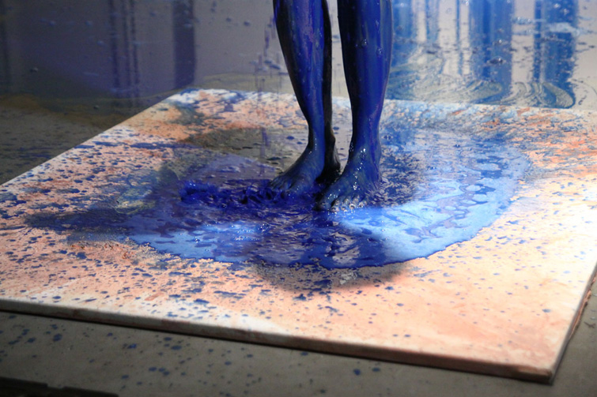

ANTYMATERIA


obraz powstał w trakcie performance: 10. WALKA Z MATERIĄ w galerii ODA w Piotrkowie Trybunalskim, jako część akcji: WOJNA DWUNASTOMIESIECZNA.
Materiały: stearyna, pigmenty, technika własna, akryl, żywica epoksydowa na płótnie 150x140cm. 2013
fot. Mariusz Marchewa Marchlewicz